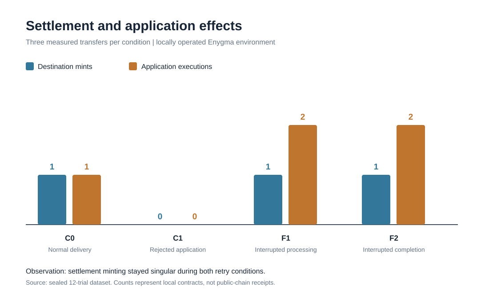
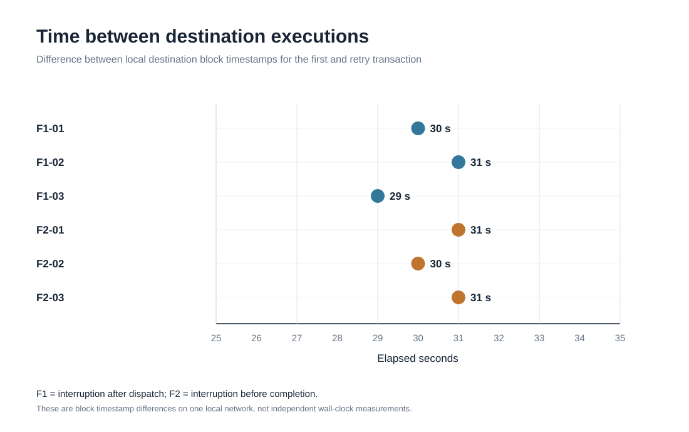

A / SETTLEMENT
Token mint
Does the destination receive the intended token amount once?
Protected in the observed trialsA programmable payment has two outcomes that look similar—until recovery separates them. We measured what actually happened across twelve controlled transfers.
Illustrative display of the six interrupted local trials—not a live chain monitor.
01 / THE QUESTION
A payment can settle exactly once while an associated programmable action is processed more than once. Those are different guarantees.
In Enygma, approved application instructions travel along with a confidential cross-chain payment. We wanted to know what happens when the receiver resumes after an interrupted completion step—not just whether the token balance looks right.
Read the full research methodologyDoes the destination receive the intended token amount once?
Protected in the observed trialsDoes the approved downstream instruction also execute exactly once?
Repeated under test recovery02 / EXPERIMENTAL ENVIRONMENT
Two Sovereign chains, a Private Network Hub, proof services and relayers in a locally operated Docker environment. Every trial used a new logical payment identifier and a 0.1-token research asset.
Source balance and token supply decrease by 0.1.
CHAIN ID 12345Confidential messaging and proof processing bridge the two sides.
CHAIN ID 1337Settlement minting and an approved observer call are tracked separately.
CHAIN ID 1234603 / EXPLORE THE MEASUREMENTS
Select any condition to compare settlement mints, application executions and refunds. Each result is a summary of three historical local transfers.
Each completed transfer minted once and invoked the approved observer once.
Click to switch evidence categories. This visualization changes the view of recorded findings; it does not send transactions or simulate a live payment.
04 / THE OBSERVATION
Across all six controlled receiver interruptions, the first destination execution minted 0.1 token, while the subsequent recovery execution increased the application observer again without issuing another mint.


This is an application-level effect in an operator-controlled local Enygma environment with a test-only instrumented receiver. It is not a double mint, a public-chain Enygma settlement, or a confirmed production exploit.
05 / FOLLOW THE EVIDENCE
The public release includes archived transaction/receipt records, locally reconstructed roots, historical balances, a hash-indexed archive disposition and executable verification checks.
Source burns, destination mints, application calls and restored source balances.
Inspect the inventory ↗ 02 / RECEIPTS51Distinct archived transactions with saved receipt/header root checks.
See receipt references ↗ 03 / REPRODUCIBILITY04Hosted evidence checks, pinned code tests and byte-identical relayer builds.
View completed CI run ↗06 / VERIFY IT YOURSELF
Clone the published release and run the same read-only checks. No wallet, Docker deployment or transaction signing is required.
These commands check the released local evidence and public archive integrity. Hosted code tests verify the provided source and builds; neither operation creates an outside validator witness for the locally operated chains.
What each verification establishes ↗# Download the public evidence release
git clone https://github.com/Glimorr/enygma-programmable-recovery.git
cd enygma-programmable-recovery
# Run the read-only checks
python3 -B scripts/check_evidence.py
python3 -B scripts/check_release.py
python3 -B scripts/verify_public_commitment.py --onlinePUBLIC TESTNET / POST-EXPERIMENT COMMITMENT
On 4 November 2026, a SHA-256 digest of the final original evidence manifest was committed to Rayls Public Testnet in block 22,398,118. This dates the archive commitment; it does not attest the original private-chain settlement or pre-register the trial plan.
3cf97ce8a4ea2f8b4248ea39e4b3f94b05abb96e8998ca9f7372d9c59385934907 / THE TAKEAWAY
For programmable payments, protecting the token mint does not by itself establish exactly-once execution of every approved application effect across separate recovery transactions.
Read the complete research